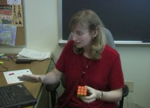
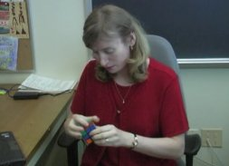
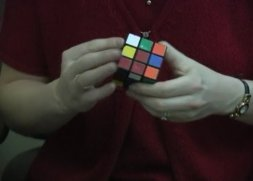
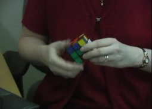
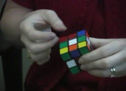
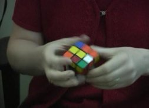
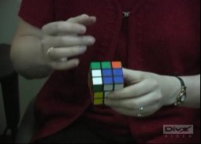

On this page, you will find a few video clips of me solving the cube. You will need the (free) DivX codec, to view the movies. Also, if you want to view them frame by frame, I was told that you need VirtualDub under the GNU license. I have also put some of my favorite finger tricks because they are a lot of fun. In "Stick", I reach 10 moves per second for three seconds. Overall, it was a lot of fun to watch myself on the screen. It is a completely different experience!
|  |
This was my first solve in 16.74 sec. You can tell that I am still stiff in it because of the delays between algorithms. The time was not that bad considering my rough cubing style. |
|  | The F2L were in 9 seconds, which was not bad, but then I got stuck in the permutation algorithm. Yeah, I need to work on my LL permutations, I know ... but the final time was 15.98 sec. |
|  | OK, I will be critical to myself again. This one was in 16.48 sec, again with lots of delays between algorithms. I think I should rely less on speed and go for a more reliable approach that is a bit slower but more smooth without that many delays. Isn't that what I advise everybody? :) |
|  | This one was really really weird. 14.33 sec. - a blooper was cancelled out with a lucky permutation. I inserted two corner-edge pieces in the F2L wrong and I had to switch them. Then I got an orientation that I like (four corners) and a trivial permutation. Without being lucky, I would have gotten probably around 17.something. |
|  | My favorite finger trick - the Stick named aptly after shifting gears in a car with manual transmission. No, I do not drive that fast :) By counting frames, I determined 30 moves in 89 frames, which translates to 10 moves per second sustained for 3 seconds. I know, this is just a repetitive move, so it is easier to achieve that speed. It will be very hard to beat Lars Petrus' Sune at 7 moves in 0.7 seconds. That looks like magic, indeed! |
|  | Just a finger frenzy using a repetitive slice move. |
|  | I use those four moves when finishing the permutation algorithm V (the second on my permutations page). |